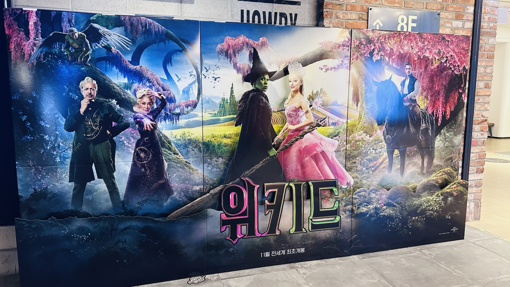
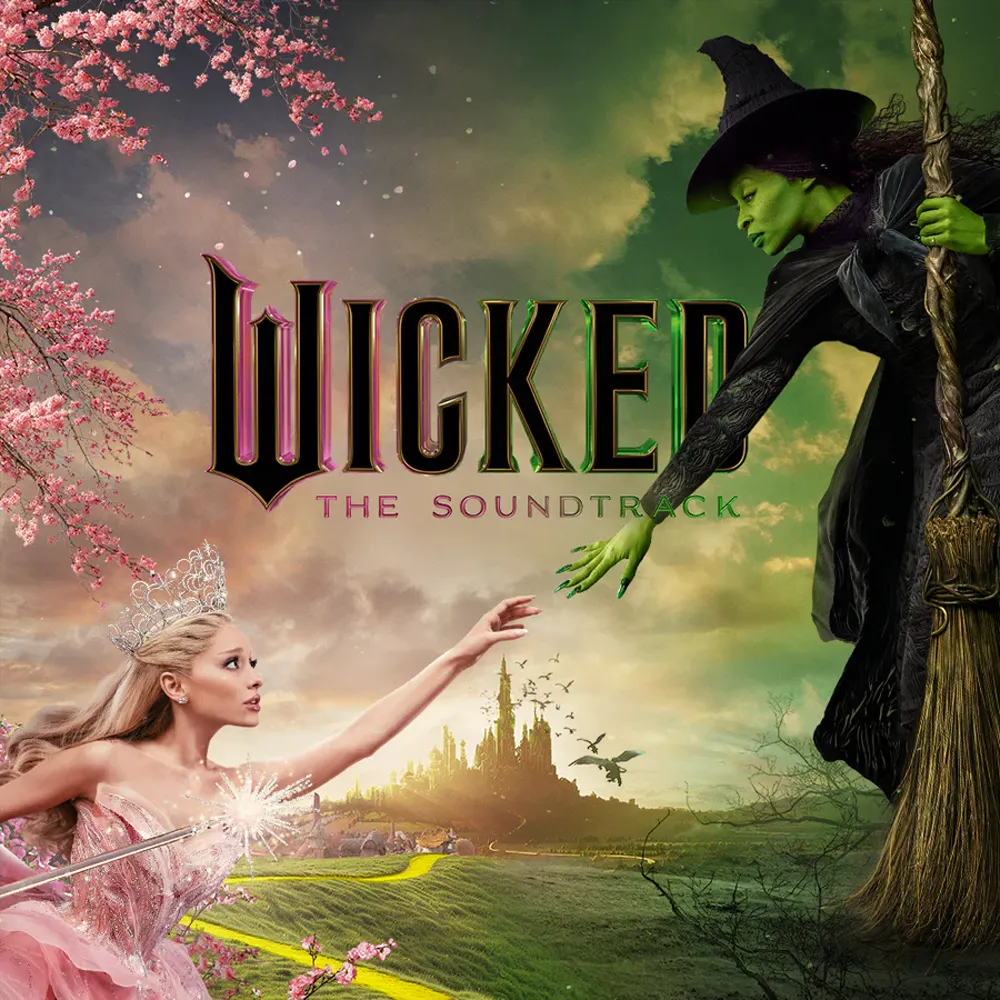

안녕하세요 라보엠입니다.
오늘 뮤지컬 위키드를 영화로 만든 영화 위키드를 가족과 함께 보고 왔습니다.

예전에 운이 좋게 런던 웨스트엔드에서 뮤지컬을 볼 수 있었는데, 오늘 영화로 보니 그 때의 감동과 함께, 그 때 이해하지 못했던 부분까지 자세하게 볼 수 있어서 참 좋은 시간이었습니다. 이 뮤지컬에는 마법사와 나(Wizard and I), 파퓰러(Popular) 등 명곡이 많지만, 이 작품의 주제를 가장 잘 담고 있는 곡은 오늘 소개해드릴 1부의 마지막 곡인 이 곡입니다. Defying Gravity는 위키드의 1막을 장식하는 압도적인 넘버로, 영화에서도 그 감동을 고스란히 전달합니다. 이 곡은 단순한 노래를 넘어 관객들의 마음을 울리는 강력한 메시지를 담고 있습니다.
무대에서 스크린으로
웨스트엔드에서 처음 이 곡을 접했을 때의 그 전율을 잊을 수가 없습니다. 살아있는 무대의 에너지, 배우들의 생생한 목소리, 그리고 엘파바가 하늘로 날아오르는 그 순간의 전율. 영화는 이러한 무대의 마법을 스크린에 옮겨 담아 또 다른 감동을 선사합니다.
이번 영화에서의 Defying Gravity는 시네마틱한 영상미로 엘파바의 비행을 더욱 웅장하게 표현했으며, 클로즈업을 통해 배우들의 섬세한 감정 연기를 생생하게 볼 수 있었습니다.
Defying Gravity의 음악적 구성은 정말 탁월합니다. 원작 작곡가인 스티븐 슈워츠(Stephen Schwartz)가 영화를 위해 리어레인지했으며, 이 곡에서도 조용히 시작해 점점 고조되다가 폭발적인 고음으로 절정에 이르는 구조는 엘파바의 내적 성장과 결의를 완벽하게 표현합니다. 영화에서는 이 음악적 여정이 더욱 풍성한 오케스트레이션과 함께 펼쳐졌습니다.
Defying Gravity 노래 가사
Elphaba, why couldn't you have stayed calm for once?
Instead of flying off the handle!
I hope you're happy
I hope you're happy now
I hope you're happy how you've hurt your cause forever
I hope you think you're clever
I hope you're happy
I hope you're happy, too
I hope you're proud how you would grovel in submission
To feed your own ambition
So though I can't imagine how
I hope you're happy right now
Elphie, listen to me, just say you're sorry
You can still be with the wizard
What you've worked and waited for
You can have all you ever wanted (I know)
But I don't want it
No, I can't want it anymore
Something has changed within me
Something is not the same
I'm through with playing by the rules of someone else's game
Too late for second-guessing
Too late to go back to sleep
It's time to trust my instincts
Close my eyes and leap
It's time to try defying gravity
I think I'll try defying gravity
And you can't pull me down
Can't I make you understand
You're having delusions of grandeur?
I'm through accepting limits
'Cause someone says they're so
Some things I cannot change
But 'til I try, I'll never know
Too long I've been afraid of
Losing love I guess I've lost
Well, if that's love, it comes at much too high a cost
I'd sooner buy defying gravity
Kiss me goodbye, I'm defying gravity
And you can't pull me down
Glinda, come with me
Think of what we could do, together
Unlimited
Together, we're unlimited
Together we'll be the greatest team there's ever been
Glinda, dreams the way we planned 'em
If we work in tandem
There's no fight we cannot win
Just you and I, defying gravity
With you and I defying gravity
They'll never bring us down
Well, are you coming?
I hope you're happy
Now that you're choosing this (you, too)
I hope it brings you bliss
I really hope you get it
And you don't live to regret it
I hope you're happy in the end
I hope you're happy my friend
So if you care to find me
Look to the western sky
As someone told me lately
"Everyone deserves the chance to fly"
And if I'm flying solo
At least I'm flying free
To those who ground me
Take a message back from me
Tell them how I am defying gravity
I'm flying high, defying gravity
And soon, I'll match them in renown
And nobody in all of Oz
No wizard that there is or was
Is ever gonna bring me down
I hope you're happy (Look at her! She's wicked, get her)
Bring me down! (No one mourns the wicked! So we've got to bring her)
Oh! (Down)
"나는 중력을 거스를 거야"라는 가사는 단순히 하늘을 난다는 의미를 넘어섭니다. 이는 사회적 편견, 고정관념, 그리고 자신에게 주어진 한계를 뛰어넘겠다는 강력한 의지의 표현입니다. 영화에서 이 가사가 울려 퍼질 때, 삶에 대입해 보며 깊은 공감을 했습니다.
캐릭터의 성장
Defying Gravity는 엘파바의 성장을 상징하는 곡입니다. 무대에서도 인상적이었지만, 영화에서는 엘파바의 내적 갈등과 결단의 순간을 더욱 섬세하게 표현했습니다. 카메라의 움직임, 배우의 표정, 그리고 특수효과가 어우러져 엘파바의 변화를 극적으로 보여줍니다. 또한 이 곡은 엘파바와 글린다의 우정이 갈림길에 선 순간을 담고 있습니다. 무대에서는 두 사람의 대비되는 선택이 관객들에게 직접적으로 전달되었다면, 영화에서는 더욱 복잡한 감정선을 섬세하게 표현했습니다. 두 배우의 연기 호흡이 만들어내는 긴장감은 극의 몰입도를 한층 높여줍니다. 초반 앙숙처럼 둘이 싸우다가 서로의 마음을 이해하고 한걸음 다가가는 파티장에서의 무반주 댄스 장면은 정막속에서 저도 엘파바와 함께 눈물을 흘릴 수 밖에 없었습니다. 이렇게 정을 나눈 친구가 서로의 선택으로 헤어질 수 밖에 없는 상황에서 부르는 이 곡은 정말 아름다우면서도 주제를 담아 묵직한 메시지를 날립니다.
맺음말
영화 위키드에서 Defying Gravity는 무대와는 또 다른 감동을 선사했습니다. 웅장한 세트, 화려한 의상, 그리고 카메라의 자유로운 움직임이 만들어내는 영화만의 스펙터클은 관객들에게 새로운 경험을 제공합니다. 특히 엘파바가 하늘로 날아오르는 장면은 영화의 기술력을 총동원해 압도적인 장면을 만들어내며 감동을 배가시켰습니다.
Defying Gravity는 무대에서 영화로 옮겨오면서도 그 본질적인 감동을 잃지 않았습니다. 오히려 영화만의 특성을 살려 더욱 풍성하고 깊이 있는 경험을 주었습니다. 무대에서 느꼈던 전율과 영화에서 경험한 새로운 감동이 어우러져 더욱 강렬하게 각인되었습니다. Defying Gravity 는 단순한 노래가 아닌, 우리 모두에게 꿈과 용기를 주는 영원한 메시지입니다. 이번에 개봉한 영화 위키드 꼭 보시길 추천드립니다. 이번 영화는 뮤지컬의 1부의 내용으로 파트2는 2025년 11월에 개봉 예정입니다.
